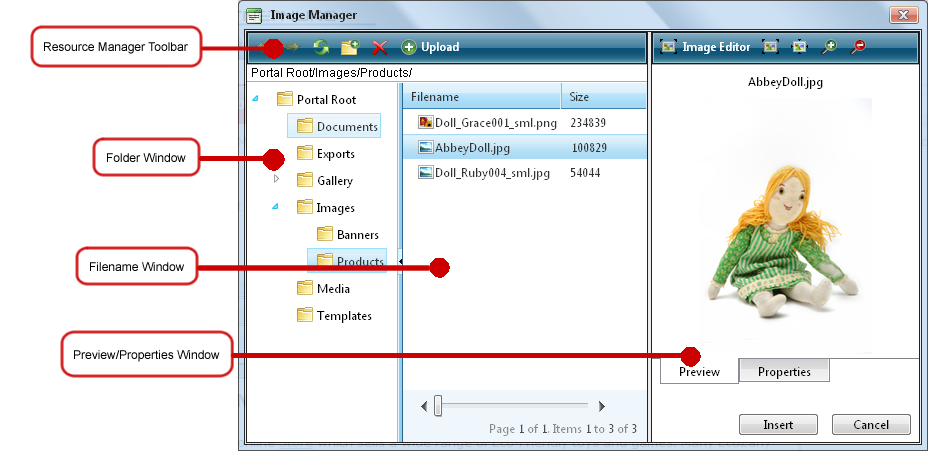
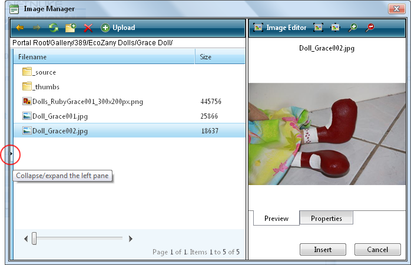

How to navigate to, select or manage folders and files using the Resource Manager provided with the TelerikEditorProvider for the RTE. The Resource Manager is commonly used for the Image Manager, Document Manager, Flash Manager, Media Manager and Template Manager tools of the RadEditor.
Note: Access to some tools is restricted by role.
The Resource Manager consists of the following toolbar and windows: Resource Manager Toolbar, Folder Window, Filename Window, Preview/Properties Window.

Resource Manager Toolbar
| Tool | Icon | Description |
|---|---|---|
| Back | Go back by one folder in the Folders window. | |
| Forward | Move forward by one folder in the Folders window. | |
| Refresh | Refresh to retrieve newly updated files. | |
| New Folder |
In the Folders window, select the parent folder and then click the New Folder button. |
|
| Delete |
|
|
| Upload | In the Folders window, select the folder where the file will be uploaded to and then click the Upload button. | |
Folder Window: This window displays the folders of the Digital Asset Management module that is located on the Admin > File Management page in a hierarchical tree structure. Select a folder to view its sub-folders and/or files in the Filename Window. Folders can be moved by dragging into a different folder. Right click a folder to perform Delete, Rename, New Folder or Upload.
Filename Window: Displays a list of the folders and/or files within the selected folder. Select a file to view a preview and/or properties information in the Preview/Properties Window. Files can be moved by dragging into a different folder. Right click an image or folder to perform Delete, Rename, New Folder or Upload.
Tip: Click the Collapse/Expand the left pane button to hide/show the Folder Window. This is useful once you have navigated to the required folder as it provides additional space to view files details.

Preview/Properties Window: Displays a preview and/or properties of the selected file. Properties can be modified as required.